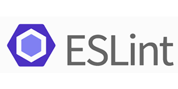
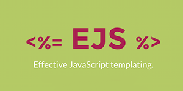
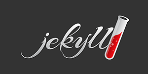
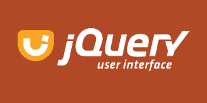
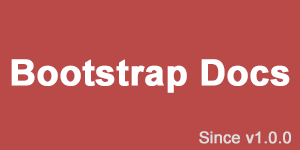

TypeScript
TypeScript 是由微软开源的编程语
言。它是 JavaScript 的一个超集，而
规范。且本质上向这个语言添加了可选的
静态类型和基于类的面向对象编程。

14天掌握进入人工智能、数据分析、
爬虫、云计算、自动化运维、WEB开
发等领域的必备语言。

React 起源于 Facebook 的内部项
目，是一个用于构建用户界面的
JavaScript 库。

Webpack 是当下最热门的前端资源模
块化管理和打包工具。它可以将许多
松散的模块按照依赖和规则打包成符
合生产环境部署的前端资源。

根据最新的 jQuery 1.11.x 和 2.1.x 版本翻译的 jQuery API 中文文档/手册。

w3schools.com 是最受欢迎的前端技术教程网站，但是国内用户一直不能访问，并且国内的中文翻译版本十分陈旧。因此做了个镜像，希望英文好的同学直接去看原版教程吧！

Preact - 一个只有 3kB 大小的 React 替代品，拥有与 React 相同的 API、组件和虚拟 DOM。

Node.js 是一个基于 Chrome V8 引擎的 JavaScript 运行环境。Node.js 使用了一个事件驱动、非阻塞式 I/O 的模型，使其轻量又高效。

Yarn 是一个快速、可靠、安全的依赖管理工具。是 NPM 的替代品。

NPM（node package manager）是 Node.js 世界的包管理器。NPM 可以让 JavaScript 开发者在共享代码、复用代码以及更新共享的代码上更加方便。

Vue.js - 是一套构建用户界面的渐进式框架。

Parcel - 极速、零配置的 web 应用打包工具。

Lodash 是一个具有一致接口、模块化、高性能等特性的 JavaScript 工具库。比相同功能的 Underscore.js 使用更广泛。

Pro Git 中文版（第二版）是一本详细的 Git 指南，主要介绍了 Git 的使用基础和原理，让你从 Git 初学者成为 Git 专家。

Bootstrap 优站精选频道收集了众多基于 Bootstrap 构建、设计精美的、有创意的网站。

Rollup 是一个 JavaScript 模块打包工具，可以将小块代码编译成大块复杂的代码。Rollup 对 JavaScript 代码模块使用新的 ES6 标准化格式。

Babel 是一个 JavaScript 编译器。Babel 通过语法转换器支持最新版本的 JavaScript 语法。

Underscore.js是一个 JavaScript 工具库，它提供了一整套函数式编程的实用功能，弥补了 jQuery 没有实现的功能，同时又是 Backbone 必不可少的部分。

gulp.js - 基于流(stream)的自动化构建工具。Grunt 采用配置文件的方式执行任务，而 Gulp 一切都通过代码实现。

Grunt 是基于 Node.js 的项目构建工具。它可以自动运行你所设定的任务。Grunt 拥有数量庞大的插件，几乎任何你所要做的事情都可以用 Grunt 实现。

ESLint 是一个插件化并且可配置的 JavaScript 语法规则和代码风格的检查工具。ESLint 能够帮你轻松写出高质量的 JavaScript 代码。
Electron - 使用 JavaScript, HTML 和 CSS 构建跨平台的桌面应用。

Sass 是一个成熟、稳定、强大的 CSS 扩展语言解析器。

LESS 为 CSS 赋予了动态语言的特性，如变量、继承、运算、函数。LESS 既可以在客户端上运行 (支持 IE 6+、Webkit、Firefox)，也可以借助 Node.js 或者 Rhino 在服务端运行。

Handlebars 是一个书写高效率、语义化的模板引擎，与 Mustache 模板兼容。
"

Stylus - 富于表现力、健壮、功能丰富的 CSS 预处理语言。
"

Bootstrap 中文网联合又拍云存储共同推出了开放 CDN 服务 - BootCDN，我们对广泛的前端开源库提供了稳定的存储和带宽的支持，例如 Bootstrap、jQuery 等。

Pug 是一款健壮、灵活、功能丰富的模板引擎，专门为 Node.js 平台开发。Pug 是由 Jade 改名而来。

Liquid - 最流行的模板语言。Jekyll、Github Pages 都在用。
"

Zepto.js 是一个轻量级、兼容 jQuery 的 JavaScript 工具库。
"

EJS 是一套简单的模板语言，帮你利用普通的 JavaScript 代码生成 HTML 页面。EJS 没有再造一套迭代和控制流语法，有的只是普通的 JavaScript 代码而已。

Tailwind CSS 是一个用于快速UI开发的实用工具集 CSS 框架。与 Bootstrap 、Foundation 不同，Tailwind CSS 没有内置的 UI 组件。完全需要开发者根据自身情况来定制设计。

Jekyll 是一个静态站点生成工具。它将 Markdown （或者 Textile） 以及 Liquid 转化成一个完整的可发布的静态网站。
"
Hexo 是一个快速、简洁且高效的博客框架。Hexo 使用 Markdown（或其他渲染引擎）解析文章，在几秒内，即可利用靓丽的主题生成静态网页。

PostCSS 利用 JavaScript 的强大编程能力对 CSS 代码进行转换。数以百计的 PostCSS 插件可以用来为 CSS 属性添加特定于浏览器厂商的前缀、支持未来 CSS 语法、模块化、代码检测等。

Chart.js 是为设计和开发人员准备的简单、灵活的 JavaScript 图表工具。
"

WebAssembly 或者 wasm，是一种新型可移植，具有占用存储小，加载速度快等特点的面向 web 应用的编译格式。

stickUp 能让页面目标元素“固定”在浏览器窗口的顶部，即便页面在滚动，目标元素仍然能出现在设定的位置。

响应式导航（Responsive Nav）是一个很小的JS插件，压缩之后仅有1.7KB，能帮你创建针对小屏幕的可切换式导航。

Unslider - 一个超小的 jQuery 轮播（slider） 插件。支持主流浏览器、键盘导航、自动调整高度和响应式布局。
"

Flat UI 是基于 Bootstrap 做的 Metro 化改造，由Designmodo提供。Flat UI包含了很多Bootstrap提供的组件，但是外观更加漂亮。在此强烈推荐！

LayoutIt! 可拖放排序在线编辑的Bootstrap可视化布局系统。由4wer同学汉化整理。

Bootstrap Switch 是对 Bootstrap 控件的扩充。基于选 HTML 中基本的选择框控件实现只有开和关两种状态的单选按钮。

由于大部分的 Bootstrap js 插件是无法扩展的，因此才有了 sco.js，它是对 Bootsrap 中 js 插件的增强实现。

iCheck 让不同浏览器下的复选框（checkboxes）和单选按钮（radio button）更美观、功能更强。

bootstrap-wysiwyg 是一个 jQuery Bootstrap 插件（5KB, 200 行代码）可以将任何一个 div 转变成一个 WYSIWYG 富文本编辑器。

Preboot 是一组用 less 语法书写的混合（mixin）和变量（variable）的集合，目的是辅助用户书写更优美的CSS。Bootstrap的前身就是Preboot。

jQuery.Pin 能将任意页面元素“钉”在某个容器顶部，而且在尺寸小的屏幕上能够自动禁用这种效果。

Bsie 弥补了 Bootstrap 对 IE6 的不兼容。目前，bsie 能在 IE6 上支持大部分 bootstrap 的特性，可惜，还有一些实在无法支持...

Messenger 是一个非常酷的弹框(Alert)组件，能够非常好的与 Bootstrap 融合，当然，单独使用效果也是非常棒。Messenger 自带4套皮肤。

Bootstrap 日期时间选择器（Bootstrap DateTime Picker）是一个 Bootstrap 组件，能够简化页面上日期、时间的输入。

这套工具让你在使用 jQuery UI 控件时也能充分利用 Bootstrap 的样式，而且不会出现样式不统一的现象，Bootstrap 和 jQuery UI 可以完美融合在一起了！

Google 的 UI 素来以简洁著称，现在 Bootstrap 也来 Google Style 一把，喜欢 Google 的就来试试这套 Google Bootstrap 吧！

Metro UI CSS 是一套用来创建类似于 Windows 8 Metro UI 风格网站的样式。现在，Metro UI CSS 项目在 Bootstrap 的基础上被开发成一个独立的解决方案。

Font Awesome 中包含的所有图标都是矢量的，也就可以任意缩放，避免了一个图标做多种尺寸的麻烦。CSS 对字体可以设置的样式也同样能够运用到这些图标上了。

Simple Icons -- Icon汇。收集众多网站的 Logo，并提供高质量、不同尺寸的 png 格式图片给广大网友，所有 Icon 版权归其所属公司。

Bootstrap 在线表单构造器能够以鼠标拖拽的方式迅速生成一个基于 Bootstrap 的完整表单，减轻了各位码农手写HTML代码的劳动。

HTML5 Boilerplate 是一套专业的前端模版，用以开发快速、健壮、适应性强的 app 或网站。

本表中列出的是 WEB 设计、开发中常用安全色。列于此是为了方便大家参考。

这里收集了 Bootstrap 从 V1.0.0 版本到现在，整个文档的历史。Bootstrap 本身就是一个传奇，而这些文档就是传奇的见证！

Git简易指南 -- 帮助你开始使用 git 的简易指南，木有高深内容。

一个气泡形状的提示（Tooltip）控件，可以在其围绕的元素周围做360度任意定位。

Cikonss 是纯 CSS 实现的响应式 Icon，兼容 IE8+。

Headroom.js 是一个轻量级、纯 JavaScript 组件，用来隐藏或展现页面上的元素，为你的页面留下更多展示内容的空间。

Buttons 是一个基于 Sass 和 Compass 构建的CSS按钮（button）样式库，图标采用的是Font Awesome，可以和 Bootstrap 融合使用。
 新浪微博：@Bootstrap中文网
新浪微博：@Bootstrap中文网